虎尾小劇場｜三年級資源班
1
大叫推人會讓事情更糟。
2
叫名字、說事情、說感覺、說希望。
虎尾小劇場｜好好說，大家都聽得懂
想一想
你會說什麼？
心情怎麼樣？
後來怎麼了？
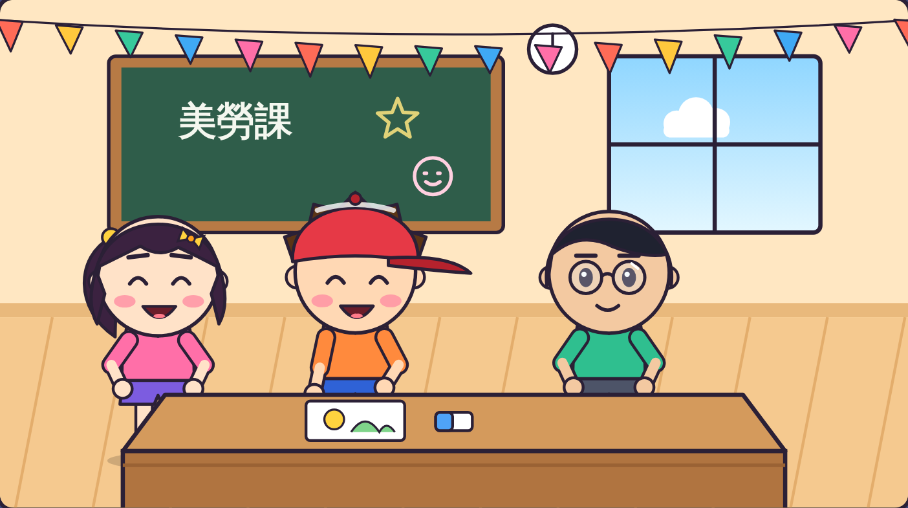
虎尾小劇場｜好好說，大家都聽得懂
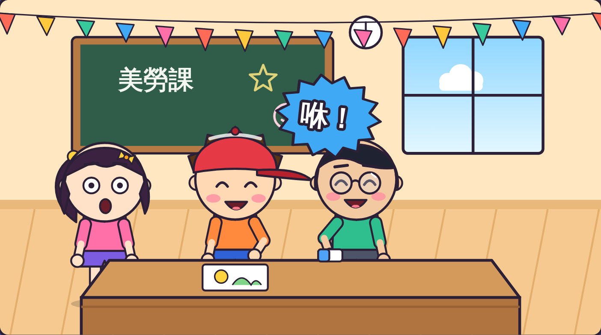
阿凱沒有問，
就拿走橡皮擦。
阿樂大喊：
「你很討厭耶！」
阿樂搶回來，
還推了阿凱。
虎尾小劇場｜好好說，大家都聽得懂
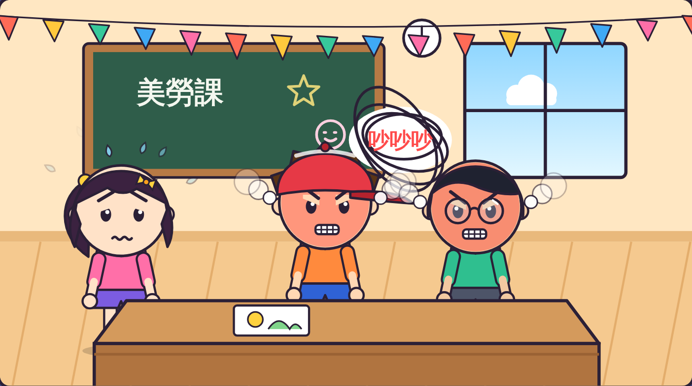
兩個人都好生氣，
吵了起來。
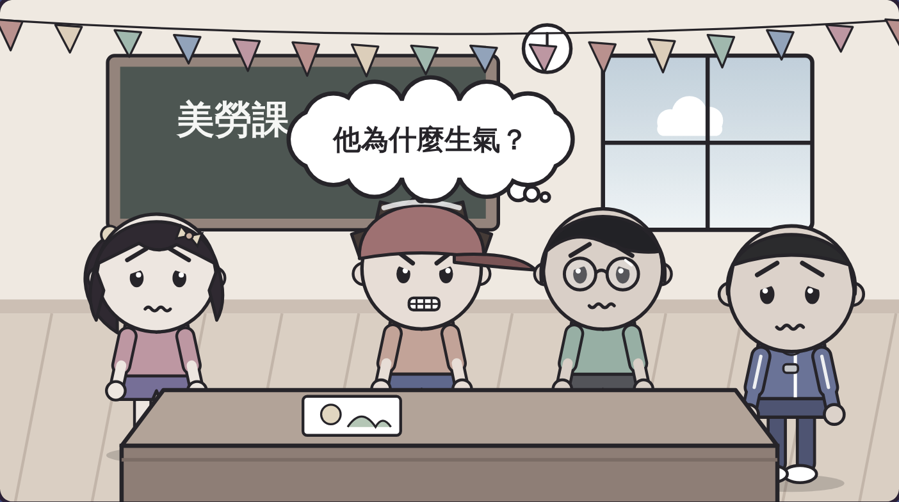
阿凱不知道，
阿樂為什麼生氣。
虎尾小劇場｜好好說，大家都聽得懂
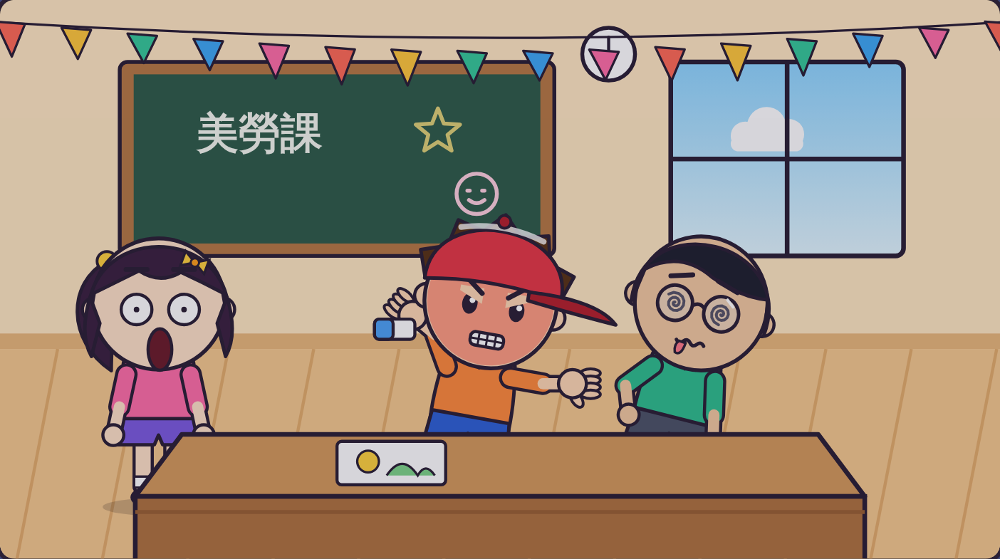
倒帶回去看
阿樂
哪裡做得不好？
有 3 個地方喔！
你找到幾個？
虎尾小劇場｜好好說，大家都聽得懂
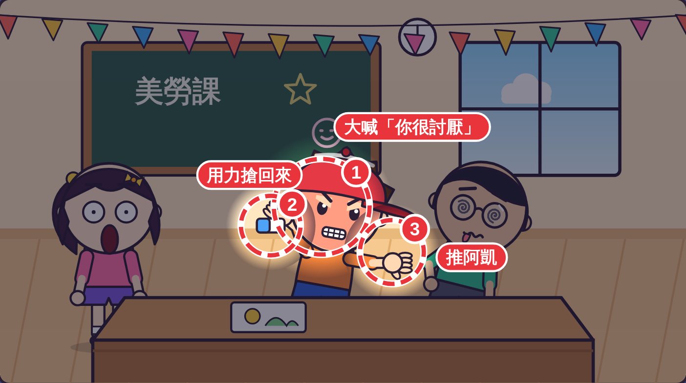
① 大喊「你很討厭」
② 用力搶回來
③ 推阿凱
接下來學學看，
怎麼做會更好！
虎尾小劇場｜好好說，大家都聽得懂
1
「阿凱，」
2
發生什麼事
3
「我覺得⋯」
4
「我希望⋯」
第 1 步
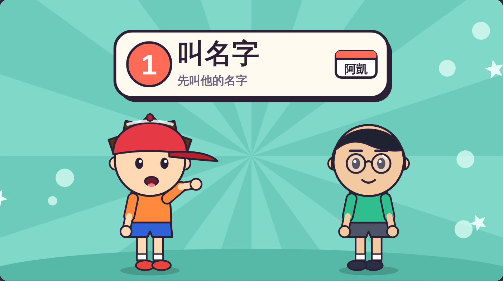
看著對方，舉起手。
「阿凱，」
叫叫看同學的名字！
虎尾小劇場｜好好說，大家都聽得懂
第 2 步
「你沒有問我，
就拿走我的橡皮擦。」
只說發生的事，
不罵人。
換你說說看！
虎尾小劇場｜好好說，大家都聽得懂
第 3 步
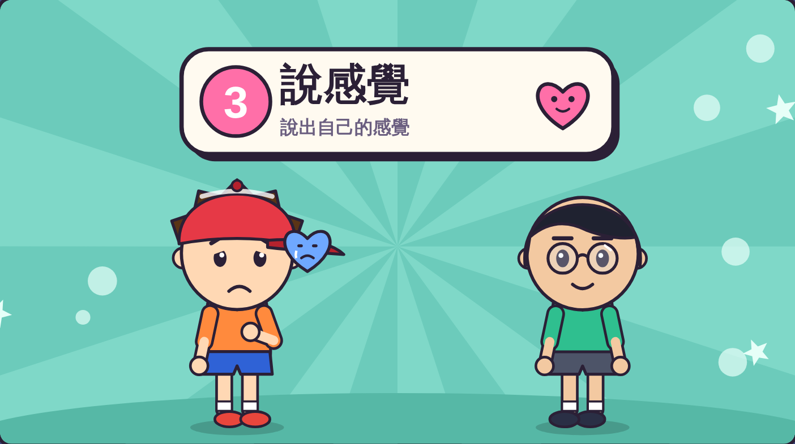
「我覺得很生氣，
也不舒服。」
句子裡有
「我覺得」。
說說你的感覺！
虎尾小劇場｜好好說，大家都聽得懂
第 4 步
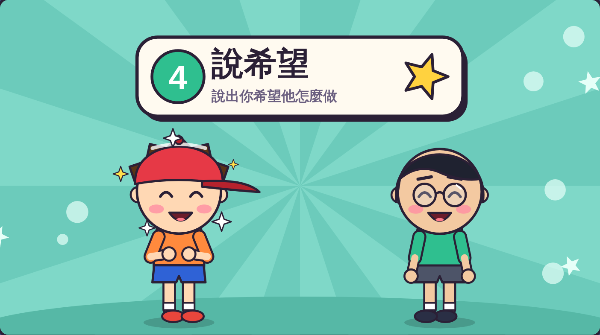
「我希望你下次
先問我，可以嗎？」
句子裡有
「我希望」。
說說你的希望！
虎尾小劇場｜好好說，大家都聽得懂
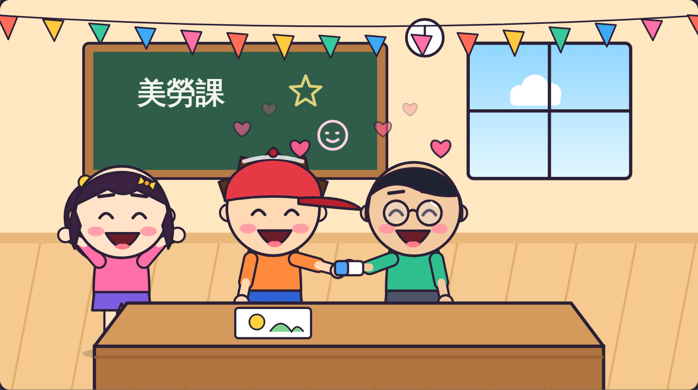
阿凱說對不起，
兩個人又是好朋友。
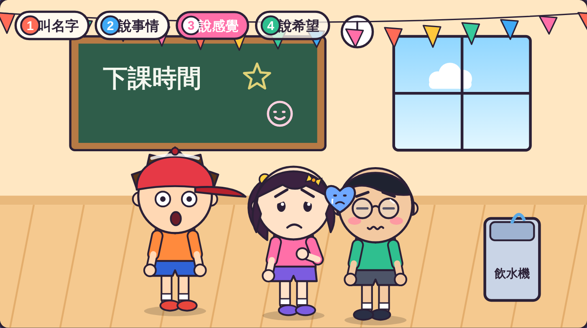
小安被插隊，
也用四步驟好好說。
虎尾小劇場｜好好說，大家都聽得懂
老師抽一張情境卡，用好好說四步驟演出來。
情境 1
情境 2
情境 3
虎尾小劇場｜好好說，大家都聽得懂
一起念口訣
叫名字，說事情，
說感覺，說希望，
好好說，
大家都聽得懂！
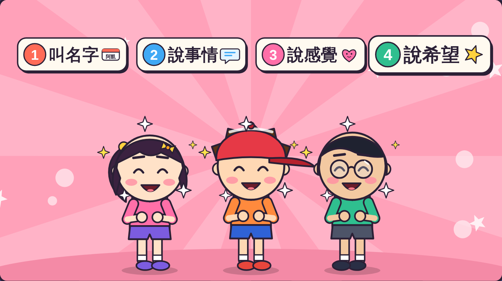
打開「好好說挑戰題」，
回答 9 個問題。
9 題
虎尾小劇場｜好好說，大家都聽得懂